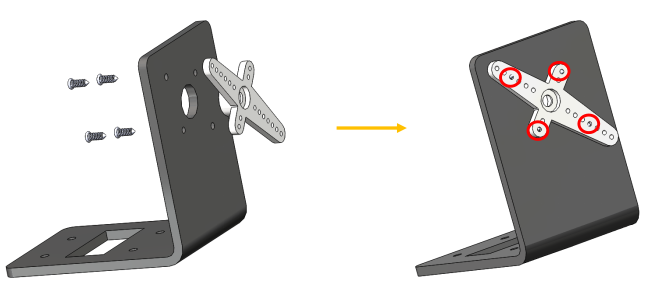
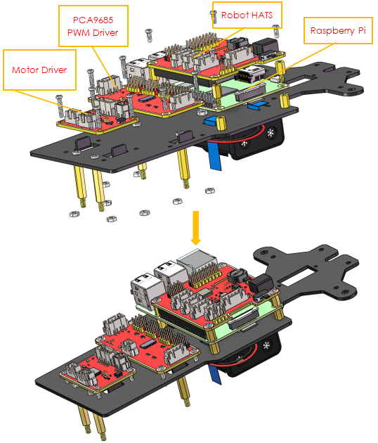

車の組み立て¶
箱を開けて様々な部品を見るとワクワクしているか？忍耐を持って、気楽にやってください。次の手順を注意深く読んでください。各ステップが終了したら、マニュアルの図に基づいて作業を再確認してください。さぁ、はじめよう！
前輪¶
以下に示すように、M4x25ネジ**を一つの**ステアリングコネクタプレート、3つの**ベアリングシールド**、3つの**六角前輪固定プレート**、と一つの**前輪を通して**M4セルフロックナット**に挿入する：

クロスソケットレンチを使用して**M4セルフロックナット**を固定してからドライバーを使用して**M4x25ネジ**を締める。

注釈
セルフロックナットはしっかりと締まっていることを確認してください。車輪とステアリングコネクタが動かなくなるまでネジを締め、次にネジを少し緩めて、ステアリングプレートだけが動くようにする。したがって、接続が緩すぎない場合、ホイールは柔軟に回転できる。
同じ方法で他の前輪を組み立てるが、車輪のステアリングコネクタプレートは前のものと対称であることを覚えておいてください。

これで2つの前輪の組み立てが完了した。
パンとチルト¶
2 x アームロッカーアームを取出し、2M1.5 x 4 ネジを使って、パン-チルトベースプレートに取り付けます。(方向はに次のように)。

**カメラマウントプレート**にも同様の操作を行ってください。
**4つのM2x8ネジ**と**M2ナット**を使用して、2つのサーボを**パン＆チルトプレート**に取り付ける（2つのサーボシャフトは左側にある）。

ステアリングパーツ¶
**ステアリングリンケ**ージと**1アームロッカーアーム**を**M1.5x4**セルフタッピング**ネジで接続します。
注釈
ギアから最も遠いアームの**最初**の穴（下の**矢印**で示されている）に挿入します。

また、それらをしっかりと締めてから、ネジを少し緩め、ステアリングリンケージが柔軟に動くようにする。
上部プレート¶
最初に**M2.5x8銅製スタンドオフ**と**M2.5ナット**を**上部プレート**に取り付ける。突き出た支柱が上に向くように注意してください。

バッテリーホルダー¶
上部プレートを裏返しにする。**リボン**を半分にカットする。プレートの穴に通す。方向に注意して、バッテリーを後で簡単に取り外すことができるように、プレートの一方の端を長くしてください。

2本の**M3x8皿ネジ**と**M3ナット**でバッテリーホルダーを固定する。バッテリーホルダーの配線の方向に注意を払ってください。

後輪（ネジ）¶
4本の**M3x25銅製スタンドオフ**を備えた4本の**M3x8ネジ**を差し込む。

PCB組み立て¶
**Raspberry Pi**（TFカード差込済み）を8つの**M2.5x8シングルパス銅製スタンドオフ**で組み立てから**ロボットHATS**を差し込む。
4つの**M2.5x6ねじ**で**ロボットHATS**を固定する。
**PCA9685 PWMドライバー**と**モータードライバ**ーを8つの**M2.5x12ネジ**と**M2.5ナット**で**下部プレート**に固定する：
後輪の固定¶
4つの**M3x25ネジ**と**M3ナット**で2つのモーターを組み立てる。モーターを配線で内側に配置するように注意してください。こうすると、回路を接続することを便利にする。

4つのM3ナットで後輪を組み立てる。

**後輪**をモーターシャフトに合わせ、回転させてやさしく差し込む。